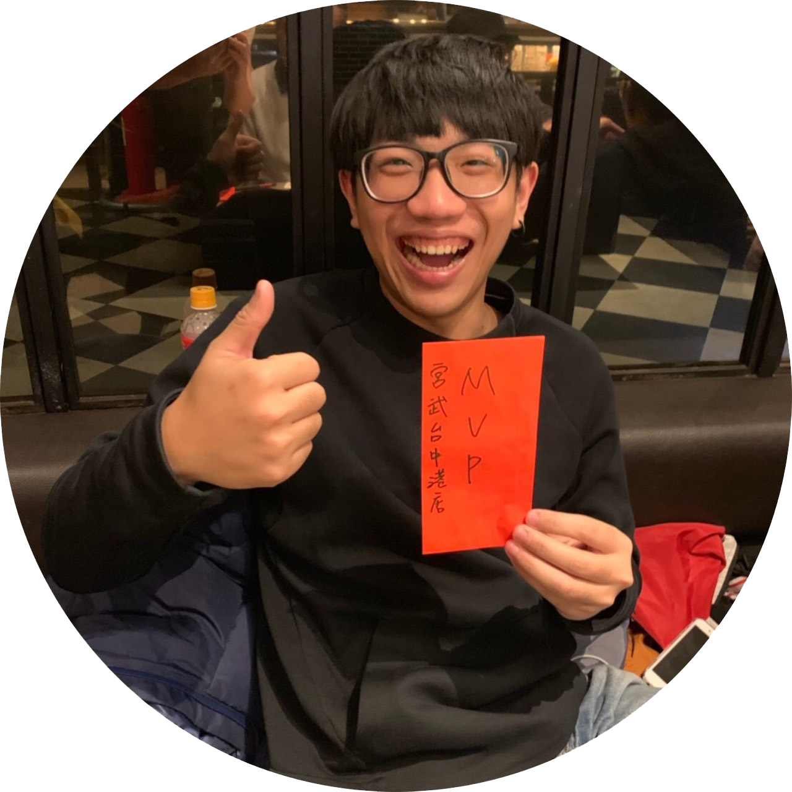

我來自苗栗，現居台中市，即使未來需要加班輪班或調去外地就職，我與我的家人都會一起面對
在校成績尚可，對於數位媒體設計(Ps、Ai、Pr)、網頁設計(HTML、CSS)、基礎程式語言(Java、Python)有一定程度的能力。
除了課業的要求外，我在大二時擔任系學會活動部部員，參與籌備大大小小系上的活動，並在大三時晉升為系學會副會長。
大四則是想嘗試些不一樣的事物，擔當學生會議員，負責學校學生自治會預算之審理。
對於預算審核及籌備活動有一定程度的經驗及知識。
為了讓自己有更多在職場上的實務經驗,在求學期間於宮武讚岐烏龍麵擔任內場人員以及7-11之員工，也擔任過營隊的小隊輔，對收營以及報表的產出以及對突發狀況的應對能力都有一定程度的了解。